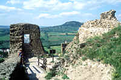
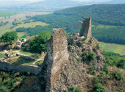
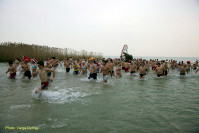

|
|
| |
Rd.
20 km östlich von Keszthely befindet sich Szigliget, eine
Weinbausiedlung auf der westlich liegenden Halbinsel am Plattensee
Nordufer. Die Siedlung war schon seit der Steinzeit kontinuierlich
bewohnt. Kelten, Römer und Awaren haben hier Ihre
Grabstätten hinterlassen. Die Ortschaft befand sich noch vor
rd. 200 Jahren auf einer Insel, die durch die starke Absenkung des
Plattenseepegels im 19. Jh. zur Halbinsel wurde.
Der Name der Ortschaft ist die Zusammensetzung zweier Wörter:
Sziget (=Insel) und Liget (=Parkwald). Denn noch Ende des 18.
Jahrhunderts war
der
Plattenseespiegel etwa 3 Meter höher als heute und weite Teile
dieser Ortschaft befanden sich damals auf einer Insel im Balaton.
Die
schilfgedeckten Häuser in den Strassen Ady,
Kisfaludy, Kossuth und Petőfi des alten Dorfes sind
denkmalgeschützt.
|
|
 |
Oben am
242 m hohen Burgberg aus der Ferne
sichtbar stehen die Ruinen
der mittelalterlichen Burg von Szígliget. |
 |
Im
einstigen Schloss Eszterházy
(Kossuth utca 174) befindet sich die Werkstatt der
Schriftsteller, im Park gedeihen mehr als 150 fremdländische
Nadelbaumarten (es gibt nur 5 einheimische Nadelbaumarten in
Mitteleuropa).
|
|
|
Ein
Besuch in einem der größeren Weinkellereien am
Burgberg bleibt ein prägendes Erlebnis für viele
Jahre und
wer einmal vor dem (Kossuth utca 3)
die
Aussicht vom mittleren Steilhang genoß, der kommt
bestimmt
bald wieder. |
 |
 |
Traditionsgemäß
findet der Balatoner Herbst mit dem zweitägigen Süllő- bzw. (auch
Zanderfestival genannt) immer vor dem 23. Oktober
(Nationalfeiertag) seinen Höhepunkt am
Balatonufer in Szigliget.
Der Schill im Balaton ist eine
besonders wetrtvolle Unterart der
Zander, der ab dem ersten Lebensjahr von den einheimischen
Fogas
genannt wird. Fogas (sprich Fogasch) bedeutet
Kamm, weil die Gräte groß und kräftig sind
und aussehen wie ein Kamm. Schill hat keine kleine
Gräte, sein Fleisch ist weiss und
saftig und am teuersten in den Fischrestaurants.
|
Den Besuchern wird ein buntes
Programm für Erwachsene und Kinder angeboten. Es gibt Spiele,
Süssigkeiten und Bogenschiessen für die Kinder. Der
Kunsthandwerkermarkt gehört ebenfalls zum Fest wie das
Showprogramm im Festzelt. Die Winzer und Gastwirte von Szigliget werden
alles aus Küche und Weinkeller für die Feinschecker
anbieten. Während des Festes wird eine Schiffverbindung
zwischen Fonyod und Szigliget eingerichtet. So wird den
Gästen vom Balatonsüdufer ermöglicht, das
Fest schnell zu erreichen. Für die Besucher wird sogar ein
Zugtransfer angeboten, da die Parkplätze am
Strand leider begrenzt sind. Eine schon 8jährige
Erfahrung des
Tourismusvereins zeigt, dass der Erfolg des Szigligeter
Zanderfestifals bei jedem Wetter sichergestellt ist.
Tausende Besucher finden den Weg nach Szigliget um einen
schönen Saisonabschluss hier zu feiern. |
Alljährlich
am 1. Januar findet das erste Bad im Balaton statt - ein Volksgaudi seit
vielen Jahren. Dabei wird ein
Weihnachtsbaum aus dem Balaton geholt, der seit dem Heiligabend vor dem
Strand von Szigliget im See steht.
Die alte Tradition wird nun seit 2011 regelmäßig
veranstaltet. Über die Tageszeit
erkundigen Sie sich bitte vor
Ort.
Am 1. Januar 2014 war das Wasser
3°C "warm" - ideal gegen Rheuma. |
 |
|
| |
| |
|
Ungarn-Tourist Team

|
| |
| |
|